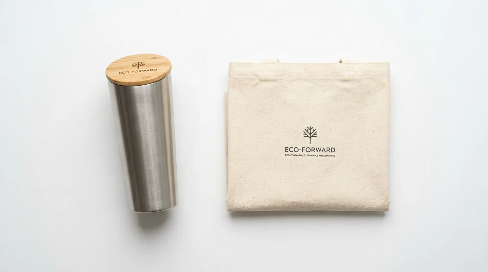

Mengapa Desain Modern Penting untuk Merchandise Ramah Lingkungan?
Desain modern penting untuk merchandise ramah lingkungan karena membantu mengubah persepsi bahwa produk berkelanjutan identik dengan tampilan sederhana atau kurang menarik secara visual.
Sebagian orang masih menganggap produk berbahan alami memiliki tampilan yang kurang formal untuk digunakan dalam konteks bisnis. Padahal, dengan pendekatan desain yang tepat, bahan seperti bambu, cork, atau kanvas daur ulang justru dapat tampil elegan dan relevan dengan estetika korporat modern.
Penerapan desain modern juga membantu merchandise ramah lingkungan lebih mudah diterima oleh berbagai kalangan penerima, mulai dari klien korporat hingga mitra bisnis internasional yang umumnya memiliki standar visual tertentu dalam menerima corporate gift.
Bagaimana Ciri Desain Modern pada Merchandise Berbahan Alami?
Ciri desain modern pada merchandise berbahan alami umumnya ditandai dengan bentuk yang sederhana, garis desain yang bersih, serta minim elemen dekoratif berlebihan pada permukaan produk.
Pendekatan desain minimalis membantu menonjolkan tekstur alami bahan itu sendiri, seperti serat kayu pada bambu atau pola alami pada cork, tanpa perlu menambahkan ornamen tambahan yang dapat mengurangi kesan bersih pada produk. Logo perusahaan biasanya ditempatkan dengan ukuran proporsional, tidak terlalu besar, agar tidak mendominasi tampilan alami bahan.
Selain bentuk, pemilihan detail seperti jenis font pada logo dan posisi pencetakan juga berperan penting. Font dengan garis sederhana dan posisi logo yang simetris umumnya menghasilkan kesan lebih rapi dibandingkan desain dengan banyak elemen visual yang saling bertumpuk.

Bagaimana Peran Warna dalam Menciptakan Kesan Elegan?
Warna berperan penting dalam menciptakan kesan elegan pada merchandise ramah lingkungan melalui pemilihan palet netral yang selaras dengan warna alami bahan, seperti cokelat muda, krem, hijau tua, atau abu-abu.
Warna-warna netral cenderung lebih mudah dipadukan dengan warna asli bahan alami, sehingga menciptakan kesatuan visual yang terlihat harmonis. Sebagai contoh, warna hijau tua atau krem sering dipilih untuk melengkapi tekstur alami bambu, sementara warna abu-abu netral cocok dipadukan dengan bahan recycled canvas.
Penggunaan warna korporat perusahaan tetap dapat diterapkan, namun sebaiknya digunakan secara terbatas sebagai aksen, misalnya pada bagian logo atau detail kecil produk, agar tidak menghilangkan karakter alami bahan yang menjadi nilai jual utama dari merchandise ramah lingkungan.
Bagaimana Menyeimbangkan Keberlanjutan dan Estetika pada Merchandise Kantor?
Menyeimbangkan keberlanjutan dan estetika pada merchandise kantor dapat dilakukan dengan memilih bahan berkualitas baik, menerapkan desain minimalis, serta memastikan proses produksi tetap memperhatikan standar tampilan profesional.
Kualitas bahan menjadi fondasi utama sebelum mempertimbangkan aspek desain. Bahan alami dengan kualitas baik, seperti bambu yang telah melalui proses pengeringan dan finishing yang tepat, akan menghasilkan tampilan lebih rapi dibandingkan bahan dengan kualitas rendah meski keduanya sama-sama tergolong ramah lingkungan.
Setelah kualitas bahan terjaga, penerapan desain minimalis membantu menonjolkan sisi estetika tanpa perlu menutupi karakter alami bahan. Pendekatan ini memungkinkan produk tetap terlihat modern sekaligus mempertahankan nilai keberlanjutan yang menjadi tujuan utama pemilihan bahan tersebut.
Terakhir, proses produksi yang memperhatikan detail finishing, seperti kehalusan permukaan dan presisi cetak logo, turut menentukan apakah hasil akhir produk terlihat profesional atau justru terkesan kurang rapi meski menggunakan bahan berkualitas.
"Keseimbangan antara fungsi, keberlanjutan, dan estetika ini menjadi kunci agar merchandise ramah lingkungan dapat diterima secara luas tanpa mengurangi kesan profesional perusahaan."
— Meilita Mujayanti, Penulis Merchandise Kantor
Apa Contoh Penerapan Desain Modern pada Produk Merchandise Tertentu?
Contoh penerapan desain modern pada produk merchandise tertentu dapat dilihat pada tumbler dengan kombinasi bahan stainless steel dan aksen bambu pada bagian tutup, atau totebag recycled canvas dengan cetakan logo minimalis satu warna.
Kombinasi dua bahan, seperti stainless steel dan bambu, sering digunakan untuk menciptakan kesan modern sekaligus tetap menonjolkan unsur alami pada produk. Pendekatan ini banyak diterapkan pada tumbler atau botol minum, di mana bagian tutup atau pegangan menggunakan bambu, sementara bagian utama tetap menggunakan stainless steel untuk menjaga fungsi dan daya tahan produk.
Pada produk berbahan kain seperti totebag, penerapan desain modern dapat dilakukan dengan membatasi cetakan logo pada satu warna dan ukuran yang proporsional, dibandingkan mencetak logo dengan banyak warna yang justru dapat mengurangi kesan minimalis pada tekstur alami kanvas daur ulang.

Kesimpulan
Merchandise kantor ramah lingkungan tidak harus mengorbankan sisi estetika demi mempertahankan nilai keberlanjutan. Dengan pendekatan desain minimalis, pemilihan warna netral yang selaras dengan bahan alami, serta perhatian terhadap kualitas finishing, produk berkelanjutan tetap dapat tampil modern dan elegan di lingkungan korporat. Keseimbangan antara fungsi, keberlanjutan, dan estetika ini menjadi kunci agar merchandise ramah lingkungan dapat diterima secara luas tanpa mengurangi kesan profesional perusahaan.